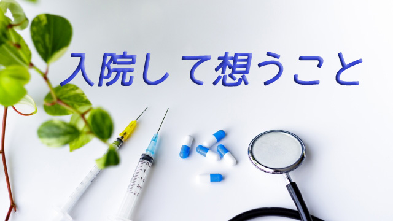

個人的な話ですが先月の後半から入院していました。腹痛（かなりの激痛）があり、病院で診てもらうと胆のう炎だという。胆のうに石がたまり炎症を起こしているらしく即手術ということに。
いわゆる胆石というやつですね。
良く聞く病気ですがまさか自分がそうなるとは…
手術は3時間以上に及び、かなり化膿していたということで困難なオペだったようです。
こうして私の胆のうはあえなく除去されてしまいました。「胆のう取って大丈夫か」という私の問いに医師は「何の問題もありませんよ」とのこと。じゃ一体胆のうは何のためにあったのかという疑問がわいたが、鈍った私の頭ではそれ以上思考できず。
入院は1週間の予定でしたが、退院の前日に再びお腹に激痛が襲う！「アレ、すでに胆のうは取ったはずなのに」
結局取り残した石が1個、管（何の管か分からないが）に落っこちていると判明。
何と今度は内視鏡でその石を除去するという。
つまり2度目の手術。
こうして入院は15日間に及び4日前に退院した次第。入院中は点滴につながれ食事も満足にとれず、痛み止めなども大量に服用したせいか意識ももうろうとして判然としない。
退院しても失った体力は想像以上で、歩行も5分歩くのがやっとという状態。
今さらながら健康のありがた味を痛感します。何事も失ってみてその有り難さが身にしみるのは人間の性かもしれませんね。ありきたりの感想ですが…。
そういうわけで、体力が回復するまでこのブログも一時休止したいと思います。少なくとも今月いっぱいはお休みして4月から再開したいと考えています。ご理解の程をよろしくお願い致します。